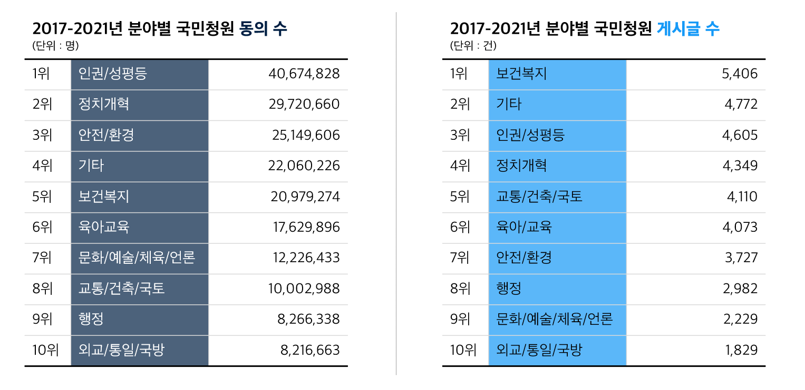
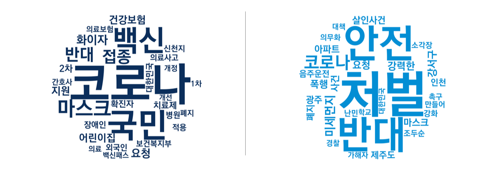
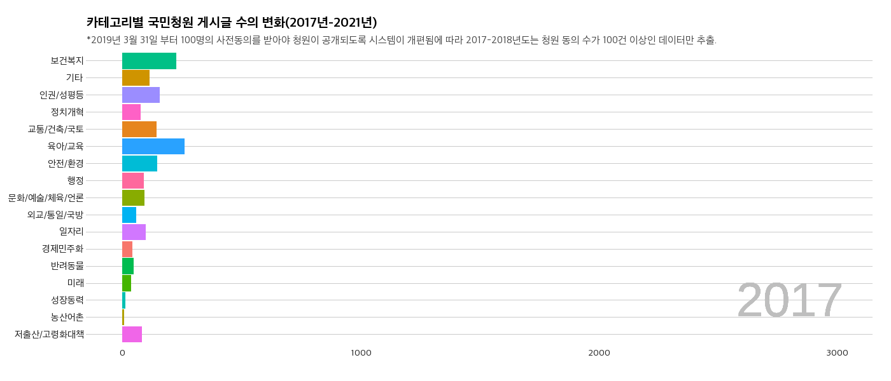

온고지신
(溫故知新,옛것을 익히고 그것을 미루어서 새것을 앎)
문재인 정부에서 해결하지 못한 과제를 파악하고
유권자들이 대선 후보를 선택하는데 도움을 줄 수 있도록 한다.
유권자들이 대선 후보를 선택하는데 도움을 줄 수 있도록 한다.
대선 후보들의 비호감도 역대 어느 대선보다 높은 상태. 사람들은 후보자 검증에 그 후보 국정 능력을 나타낼 수 있는 정책,
그 정책에 얼마나 공감하고 이해하고 있는지를 살피지 않음. 언론과 정치계에서 쏟아내는 네거티브에 휘말려 5년을 이끌어갈
대선 후보의 자질을 확인하는데 어려움을 겪고 있음.
그러면 후보의 공약만 공부하면 될까? 후보들의 공약의 필요성과 중요성을 파악하기 위해서는 그 이전의 우리 사회가 어떤 결핍을 겪었는지부터 알아야함.
국민들의 목소리를 제일 잘 담아낸 곳이 국민청원이라고 생각했고, 국민청원의 5년을 살펴본 후 대선 후보의 공약을 짚어보고자함.
프로젝트 ‘서퍼’는 국민 청원 도입 5주년을 맞아 국민 청원에 올라온 게시판을 분석해 문재인의 5년을 추적해보고자 한다. 5년 동안 올라왔던 청원을 범주화하여 국민들이 변화를 가장 원했던 분야는 무엇이었는지 분석하고 그 문제가 5년 동안 얼마나 변화했는지 알아본다. 5년 동안의 국민 청원 분석을 마무리한 후, 해결되지 못한 문제들을 위해 다음 타자가 내세운 공약이 있는지 살펴보며 끝맺는다.
그러면 후보의 공약만 공부하면 될까? 후보들의 공약의 필요성과 중요성을 파악하기 위해서는 그 이전의 우리 사회가 어떤 결핍을 겪었는지부터 알아야함.
국민들의 목소리를 제일 잘 담아낸 곳이 국민청원이라고 생각했고, 국민청원의 5년을 살펴본 후 대선 후보의 공약을 짚어보고자함.
프로젝트 ‘서퍼’는 국민 청원 도입 5주년을 맞아 국민 청원에 올라온 게시판을 분석해 문재인의 5년을 추적해보고자 한다. 5년 동안 올라왔던 청원을 범주화하여 국민들이 변화를 가장 원했던 분야는 무엇이었는지 분석하고 그 문제가 5년 동안 얼마나 변화했는지 알아본다. 5년 동안의 국민 청원 분석을 마무리한 후, 해결되지 못한 문제들을 위해 다음 타자가 내세운 공약이 있는지 살펴보며 끝맺는다.
"5년간 쌓여온 메세지들"
제20대 대선이 얼마 남지 않았다. 새로운 정부가 출범하기 전 지난 5년간의 국정 현황을 되돌아볼 때가 왔다.
5년이라는 시간 동안 국민들은 정부에게 무엇을 묻고 요청했을까? 우리는 이 질문에 대한 답을 ‘국민청원 데이터’를 통해서 찾고자 한다.
5년 동안 켜켜이 쌓인 시민들의 메세지를 풀어보며 다양한 정책 분야의 공공 이슈를 톺아보자.
분석 방법
- 데이터 수집 기간을 청와대 국민청원이 시작된 2017년 8월 19일부터 2021년 12월 31일로 설정한 후, 웹크롤링을 통해 국민청원 사이트에 접속해 ‘분야’, ‘청원 제목’, ‘청원 시작일’, ‘청원 마감일’, ‘참여 인원’을 수집했다.
- 2019년 3월 31부터는 국민청원 시스템이 100명의 사전동의를 얻어야 글을 게시할 수 있도록 개편됨에 따라 2017-2018년 또한 청원 수가 100명 이상인 데이터만 수집했다.
- 데이터분석과 시각화는 R과 Python을 통해 진행했다.
국민청원의 17가지 분야 구성
정치개혁
외교/통일/국민
일자리
미래
성장동력
인권/성평등
육아/교육
안전/환경
저출산/고령화대책
행정
반려동물
문화/예술/체육/언론
농산어촌
보건복지
교통/건축/국토
경제민주화
기타
대한민국 국민이라면 누구나 국민청원을 신청할 수 있다. 국민청원에서는 청원을 등록할 때 청원인이 직접 분야를 선택할 수 있도록 되어 있다.
또, 이러한 분류를 통해 청원인은 자신이 관심있는 분야의 청원을 선택해서 볼 수도 있다.
국민청원을 구성하고 있는 카테고리는 위와 같다. 청와대에 따르면,
위 17가지의 분야는 국민들의 다양한 목소리를 최대한 반영할 수 있도록 정책 분야 등을 참고하여 설정한 것이다.

그렇다면 지난 5년간 국민들은 어떤 정책 분야에 관심이 많았고 어떤 목소리를 냈을까?
국민의 정치적 관심 척도를 크게 ‘동의 수’와 ‘게시글 수’로 나누어 살펴보았다.
두 개의 표를 보면 전체 17개의 분야 중 10위까지는 ‘동의 수’와 ‘게시글 수’를 구성하고 있는 분야가 같은 것을 알 수 있다.
또한, 이를 차지하고 있는 순위 차이 또한 1-3단계 정도밖에 되지 않아 대략적으로 ‘동의 수'와 ‘게시글 수'는 비례한다고 볼 수 있다.
그러나 ‘보건복지’와 ‘안전/환경’에서만큼은 두 지표의 순위 차이가 다른 분야들보다 뚜렷하다.
‘보건복지’의 경우 청원 동의 수에서는 5위이지만 게시글 수에서는 1위를 차지하였으며 이는 코로나 정세를 반영한 결과로 보인다.
반대로 ‘안전/환경’의 청원 동의 수는 3위였지만 게시글 수에서는 7위로 내려갔다.
역대 가장 많은 동의 수를 얻은 청원 1,2위가 모두 ‘텔레그램 n번방 사태’ 관련 청원이었고 사회적 파급력이 높었던 두 청원 모두 ‘안전/환경’ 분야에 속했기 때문으로 풀이된다.

그렇다면 동의 수와 게시글 수의 순위 차이가 유독 컸던 ‘보건복지’와 ‘안전/환경’에서는 어떤 목소리가 나왔을까.
두 분야를 구성하는 국민청원의 제목을 수집해 워드클라우드 형태로 시각화해본 결과,
‘보건복지’를 구성하고 있는 의제로는 ‘코로나’, ‘백신’, ‘마스크’ 등으로 코로나 바이러스와 관련된 키워드가 압도적인 비중을 차지하고 있었다.
이외에도 장애인, 의료사고, 의료보험, 건강보험 등의 키워드도 눈에 띈다.
‘안전/환경’의 경우 ‘처벌’과 ‘반대’와 같은 특정 사건과 정책에 대한 제재를 담은 키워드들이 높은 빈도수를 보이고 있으며
‘강서구’, ‘조두순’, ‘살인사건’ 과 같이 특정 사건명의 일부도 함께 언급되었다. 이외에도 ‘미세먼지’ 키워드가 보이는데,
국민들이 국민청원을 통해 미세먼지에 대한 위험을 우려하여 저감을 조치를 요구하였음을 유추해볼 수 있다.
5년치의 데이터를 연도별로 나누어 본다면, 각 분야별 청원 동의 수는 어떤 형태를 띄고 있을까.
위의 그래프는 17가지 분야의 국민청원 동의 수를 연도별로 나타낸 것이다.
‘정치개혁' 청원이 빗발쳤던 2019년을 제외하고는 모든 년도에서 ‘인권/성평등’이 가장 높은 청원 수를 보였다.
이는 많은 국민들이 청원을 통해 사회권 보장의 목소리를 내고 있음을 보여준다.
한편, 연도별로 ‘청원 동의 수’만을 놓고 보면 유독 2020년에 청원의 열기가 높았다.
2020년에 올라온 대표적인 청원으로는 ‘텔레그램 n번방 용의자 신상공개’, ‘신천지 강제 해체’ ,’중국인 입국 금지’가 있다.

청원 동의 수와 마찬가지로 17가지 분야의 게시글 수 또한 연도별 흐름을 볼 수 있다.
2019년까지만 해도 ‘정치개혁', ‘인권/성평등', ‘기타' 분야가 게시글 수 상위권을 차지했지만,
2020년 이후부터는 1000건 이하에 머물러있던 ‘보건복지’의 게시글 수가 2배 가량 증가함을 알 수 있다.
해당 수치의 변화는 코로나에 당면한 국내 정세의 반영이다.
게시글 수의 추이
마지막으로 각 분야별로 ‘월’ 단위로 더 세밀하게 나누어 보았다.
어떤 청원들이 17가지의 분야를 꾸리어 나가고 있었을까?
화살표 버튼을 클릭하면 2017년부터 2021년까지의 주요 청원과 정책적 사안들을 분야별로 하나씩 살펴볼 수 있다.
지난 5년간 쌓여온 공공 이슈들을 확인해볼 수 있을 것이다.
금융시장 빌런의 발견. '공매도'
정부도 국민도 혼란 그 자체인 부동산 대책
땅콩은 시작에 불과했지
평창에 드리워진 '빙상연맹'이라는 그늘
시간의 뒤안길을 걷는 지방 농촌
여전히 갈 길이 먼 '동물보호법'
마스크 언제 벗을 수 있을까요?
탈원전, 이상과 현실의 괴리
드랍 더 비트(코인)?
일상에도 재난 문자가 있었더라면
난민 청원으로 드러난 대한민국의 본심
어린이집, 대체 뭐가 문제인걸까?
성범죄에 갑질에 횡령을 더해서
새로운 일자리보단 좋은 일자리가 먼저
아기는 황새가 물어다 주는 거 아닌가요?
파란만장했던 20대 국회 톺아보기
단지 앞에 택배가 쌓인 이유
주요 청원
-
2018년 4월 ‘삼성증권 시스템 규제와 공매도 금지’ 청원
삼성증권이 우리사주조합원에게 한 주당 1,000원을 배당해야 할 것을 한 주당 1천주씩 배당하여 주식 거래 시스템 개편과 공매도 제도를 금지에 대한 목소리를 담은 청원이 잇따라 올라왔다. -
2018년 10월 ‘국민연금 주식 대여 금지’ 청원
국내 대표 공적 연기금인 ‘국민연금’과 ‘우정사업본부’가 2008년 이후 10년간 주식을 빌려주고 벌어들인 수수료가 공개되면서, 이러한 주식 대여가 공매도로 이어져 개인투자자들의 피해와 국민연금의 수익 악화로 이어진다는 비판이 담긴 국민청원이 게시되었다.
주요 청원
-
2018년 10월 ‘카풀 서비스 사업 반대’ 청원
2018년 10월 모바일 앱을 통해 카풀(car-pool)을 중개하는 플랫폼 기업이 등장하자, 택시업계를 포함한 많은 국민들이 열악한 택시 종사자의 여건이 더욱 악화되고, 일자리가 사라질 것이라는 염려의 목소리를 국민청원에 담아냈다. -
2020년 7월 ‘617 & 710 부동산 대책’ 관련 청원
정부가 주택 가격 안정화를 위해 한 달 간격으로 번복해서 발표한 부동산 대책에 대한 국민청원이 빠르게 증가했다. 특히 정부가 부동산에 징벌적 과세를 한다는 비판과 함께 소급적용에 대한 우려가 컸다.
주요 청원
-
2018년 4월 ‘대한한공 항공사명 회수’ 청원
전 ‘대한항공’ 전무 조현민의 물컵 갑질 사건이 논란이 되면서 ‘대한한공’이라는 항공사명을 회수하자는 국민 청원이 폭발적으로 급증했다. -
2018년 4월 ‘다산신도시 실버택배 반대’ 청원
다산 신도시의 한 아파트에서 후진하는 택배 차량에 아이가 치일 뻔한 사고가 발생하자 입주민들이 단지 내 택배 차량의 출입을 막았다. 택배회사들은 이에 반발해 단지 입구에 배송물을 쌓아 두고 돌아갔으며 이에 국토교통부가 중재에 나서 ‘실버 택배’를 도입하겠다고 나섰으나, 여기에 국민 세금이 투입된다는 사실이 알려지면서 청원이 제기되었다. - 2020년 3월 ‘코로나19로 인한 소상공인 재정난 해소’ 청원
주요 청원
-
2018년 2월 : ‘평창올림픽 대한민국 여자 팀추월 경기’ 관련 청원
평창올림픽 여자 팀추월 경기에 출전한 대한민국 선수들이 서로 거리를 좁히지 못하면서 준결승 진출이 무산되었다. 이후 집단 따돌림 논란과 함께 빙상 연맹의 미숙한 행정에 대한 국민의 분노가 고조되면서 선수 출전 중단, 빙상연맹 감사를 요구하는 청원이 급증했다. -
2018년 4월 : ‘전 대한빙상경기연맹 전명규 전 부회장 파면’ 청원
‘그것이 알고싶다’가 빙상계 적폐 논란을 부른 전명규 교수의 실세를 보도하면서 대한빙상경기연맹 부회장 보직에서 사퇴, 한국체대 교수 파면에 대한 국민청원 여럿 게시되었다.
주요 사안
#농촌 소멸
#낚시부담금 도입 반대
#농업과 어업 소득의 과세 불균형 해소
#쌀 수급 안정
#AI 예방적 살처분 반대
#무허가 축사 적법화 기한 연장
#후쿠시마산 수산물 수입 반대
#일본 김 산업 업체의 한국 진출 반대
주요 사안
#동물보호법 강화
#불법 동물 번식장 폐쇄
#개식용 금지
#동물복지
#동물학대 가해자 처벌
#유기견 보호소 폐쇄 반대
#반려동물 분양 금지
#반려동물의 의료사고 처벌
주요 청원
- 2020년 2-3월 ‘코로나 바이러스 확산 방지를 위한 해외 입출국 금지 & 전국 신천지 교회 폐쇄 & 마스크 공급 및 지원’ 청원
-
2021년 12월 ‘백신 패스 도입 반대’ 청원
정부가 도입한 방역패스 정책과 관련해 돌파 감염이 많아 백신을 맞고서도 안심할 수 없다는 점, 정부가 추가 접종을 요구하는 점, 미접종자의 일상생활에 불이익이 생기는 점 등을 우려해 백신 패스 도입을 반대하는 청원들이 폭발적으로 급증했다.
주요 사안
#탈원전 정책 반대
#가상 화폐 규제 반대 vs 찬성
#전기용품 및 생활용품 안전관리법(전안법) 개정
#방사광 가속기 유치
#SK 하이닉스 구미 유치
주요 사안
#가상화폐 규제 반대 vs 찬성
#조두순 출소 반대
#신한울 3·4호기 건설
#세월호 참사 전면 재수사
#난민 입국 반대
#조선일보 폐간
#영아수당 지급
주요 청원
-
2018년 5월 ‘광주 폭력조직의 집단 폭행 사건 엄벌’ 청원
광주 광산구 일대 한 도로에서 폭력조직 소속 남성 8명이 30대 남성을 집단폭행하여 사실상 실명 등 피해를 입힌 사건이 발생했다. 당시 현장에 경찰관이 출동했지만, 가해 남성들을 즉각 제압하지 않아 소극적으로 대응했다는 논란이 일어 이를 엄벌해달라는 국민청원이 제기되었다. - 2018년 10월 ‘강서구 PC방 아르바이트생 살인사건 강경처벌’ 청원
-
2020년 2월 ‘코로나19 확산 방지’ 청원
코로나19의 확산으로 중국발 입국자 입국 금지, 마스크 가격 안정화, 확진자 동선 공개 요청, 신천지 압수수색 요청 등을 요청하는 국민청원이 끊이질 않았다.
주요 청원
-
2018년 2월 ‘천안함 사건 재조사’ 청원
평창 동계올림픽에 대표단으로 북한 김영철 노동당 부위원장이 방남하기로 하자, 아직 천안함의 배후를 명확히 밝히지 못했다며 제기된 청원이다. -
2018년 7월 ‘제주 예멘 난민 수용 반대’ 청원
내전을 피하기 위해 예멘에서 500여명의 난민이 제주도에 오자, 치안 불안과 난민 불인정 등을 이유로 난민법 폐지와 난민 추방 청원이 제기되었다.
주요 청원
-
2018년 7월 ‘어린이집 아동학대 근절’ 청원
서울 강서구 어린이집에서 보육교사 김씨가 원생 5명에 대해 잠을 재운다며 이불을 머리까지 씌운 채 10회 이상 팔과 다리로 눌렀고, 영아 1명이 사망하는 사고가 발생했다. 뿐만 아니라, 서울 도봉구 어린이집에서도 아동학대 사실이 발견돼 국민적 공분을 샀다. -
2018년 10월 ‘사립유치원 비리 조사’ 청원
박용진 더불어민주당 의원이 사립유치원 비리 근절을 해결하기 위해 마련한 정책토론회가 유치원 단체의 집단행동으로 아수라장으로 변했고, 이달 말 박 의원이 공개한 사립유치원 회계비리에서는 비리 규모가(당시) 최근 5년간 16,122건(382억원)으로 드러났다. - 2020년 3월 ‘코로나로 인한 개학 연기 요구’ 청원
주요 청원
-
2018년 5월 홍대 누드 크로키 모델 불법 촬영 관련 청원
초반 누드 크로키 모델을 불법 촬영하여 유포한 자를 처벌해달라는 청원이 주를 이뤘으나, 수사가 빠르게 진행되자 이윽고 여태까지 불법 촬영을 일삼은 많은 몰카범을 수사하지 못한 게 아니라 않은 것 아니냐는 청원이 많은 동의를 얻었다. -
2018년 10월 위디스크 양진호 회장 처벌 청원
과거 국내 웹하드 업계 1·2위인 ‘위디스크’와 ‘파일노리’의 실소유주인 양진호 전 한국미래기술 회장이 디지털성범죄에 연루 (각종 음란물과 리벤지 포르노 파일 등을 통해 막대한 부를 축적)돼 경찰 수사를 받고 있는 와중, 전직 직원을 무차별 폭행한 영상이 폭로돼 처벌 여론이 들끓었다.
주요 사안
#비정규직 정규직 전환 찬성 vs 반대
#주휴수당 폐지
#주52시간제 강화 vs 폐지
#특정 기업의 비리 조사
#고졸 우대 정책 폐지
#일자리 처우 개선
#부당 해고 복직
#직장 내 괴롭힘 근절
#공정한 채용 추진
주요 청원
-
2017년 9월 ‘난임 부부 지원 대책 마련’ 청원
2017년 10월부터 난임 치료 시술에 건강보험이 적용되어 본인 부담금이 낮아질 전망이었으나, 그 횟수가 제한되어 지원이 한정적이라는 지적이 나왔다. 이 때문에 난임 지원 횟수 제한을 폐지해달라는 청원이 제기되었다.
주요 청원
-
2018년 4월 국회의원 해외연수 전수조사 청원
김기식 금융감독원장이 국회의원 시절 인턴 비서와의 ‘로비성 해외 출장’으로 논란을 빚었는데, 여기에 의원 임기 말 해외 출장이 추가로 논란이 되어 국회의원 해외연수를 전수조사 해야한다는 청원이 발생했다. -
2018년 5월 ‘국회의원 불체포특권 폐지 및 기명투표실시’ 청원
국회는 국회의원의 불체포특권을 이유로 홍문종·염동열 의원에 대한 체포 동의안을 상정했지만, 무기명으로 실시된 투표에서 부결되었다. 이 때문에 ‘제 식구 감싸기’라는 비판이 나왔고, 국회의원 불체포특권을 폐지하고 기명투표를 실시해야 한다는 청원이 빗발쳤다.
주요 청원
-
2018년 ‘4월 다산 신도시 택배 지원 사업 반대’ 청원
다산 신도시의 한 아파트에서 후진하는 택배 차량에 아이가 치일 뻔한 사고가 발생하자 입주민들이 단지 내 택배 차량의 출입을 막았다. 택배회사들은 이에 반발해 단지 입구에 배송물을 쌓아 두고 돌아갔으며 이에 국토교통부가 중재에 나서 ‘실버 택배’를 도입하겠다고 나섰으나, 여기에 국민 세금이 투입된다는 사실이 알려지면서 청원이 제기되었다. -
2020년 3월 ‘코로나19’ 관련 청원
코로나19로 피해를 본 소상공인 등을 위한 정책적 지원 촉구하고 대구 경북 지역을 특별재난지역 선포하기를 요청하는 등의 청원이 주를 이뤘다.
"그들이 전하는 메시지의 전문"
검·경찰 개혁
노동 환경
디지털 성범죄
미성년자 대상 성범죄
북한
성평등
사회적 소수자
아동학대
역사왜곡
음주운전
의료사고
정치개혁
종교
청소년 범죄
코로나19
투자
플랫폼
총 44,063의 국민청원 중에(100명 이상의 동의 수를 얻은 청원) 정부의 답변을 받은 청원은 272개로 그 비율은 6%에 불과하다.
이는 94% 비율의 청원이 아직도 미해결 상태로 남아있음을 의미한다.
그래서 <SURFER>는 '20만 이상 동의'라는 조건의 경계를 더 넓혀 1만명 이상의 동의를 받은 청원들을 살펴보고,
기존의 국민청원 페이지의 17가지 분야를 그대로 따르기보다는 자주 나타나는 청원 주제를 토대로 세분화하였다.
그 결과, 키워드는 크게 ‘검·경찰 개혁’, ‘노동 환경', ‘디지털 성범죄', ‘미성년자 성범죄', ‘북한', ‘성평등', ‘사회적 소수자', ‘아동학대',
‘역사왜곡', ‘음주운전', ‘의료사고', ‘정치개혁', ‘종교', ‘청소년 범죄', ‘코로나19’, ‘주식투자', ‘디지털 플랫폼'로 나누어 볼 수 있었다.
* ‘미성년자 성범죄’와 ‘디지털 성범죄’ 청원의 범행 주체가 미성년자인 경우 청소년 범죄로 분류했다